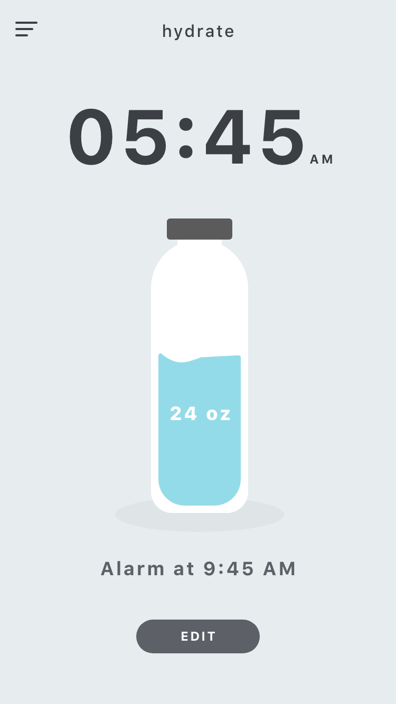

Hydrate Alarm App
Venmo Design Challenge
While interviewing for the Product Design Internship at Venmo during fall 2017, I was tasked with a design challenge. I was given three options and was challenged to chose one to explore and develop a solution for. After completing the challenge, I was invited onsite to speak with designers and developers at Venmo and discuss my solution. A bit of time after, I decided to refine the project in order to practice my UI work as well as begin learning how to use Framer.
The Problem
Bob is frequently late to class, work, and appointments in the morning because he missed his alarms. He uses the default alarm app on his phone, but he often sleeps through the alarm or snoozes too many times because the snooze button is too easy to find. Bob wants to be more punctual, so design a solution for him that addresses his alarm problems. The only constraint is that the solution has to be software that works on a phone.
Background
For this challenge, I selected the problem because of its relevance in my life as well as those around me at Carnegie Mellon. I see this problem to be particularly interesting because I am looking to make the user do something they might not want to do: forcing them out of their bed in order to start the day. However in the end, making the user wake up and get out of bed is supposed to benefit them in the long term. I also believe there is large opportunity area here to make the wake up experience more pleasant and useful to the rest of the user’s day.
Phase 1: Research
To start, I did some rudimentary research into other alarm apps and what wakes the
people up in general. Below are some of the apps that I looked into and their main
function for waking people up.

While looking at other competitors gave me some ideas I wanted to in general
understand how different people wake up. I personally wake up in different ways each
morning, sometimes I just need sunlight, other days its some funny post I read on my
phone while groggy in bed. I asked around to some friends and browsed Quora and
Reddit to get a basic overview. Here were some of the methods people used.
- Having friend call them/Someone else knock on their door
- Leaving blinds open at night/Turning on bedside light
- Using multiple alarms
- Putting alarm across the room
- Drinking a glass of cold water
- Stretching
Key Insights
What I heard from these internet forums and from my friends was that action or
urgency is what ultimately wakes them up mentally and then helps get them started on
their day. This also aligns with the methods of the competitors. However, looking more closely I see that the competitors focused mainly on the aspect of waking up. There
were some interesting interactions in the list of methods people use. For example,
someone else knocking on their door is a social interaction while drinking a glass of
cold water is related to their health.
Phase 2: Ideation and Development
From my basic research and exploration into the topic, I decided to brainstorm some
ideas. I saw from competitors that many of them involved a lot of action on the users
part or elicited a feeling of urgency to get people up. While it seems to be effective in
getting people up, I am unsure if it left a good feeling in the user. I wanted to create an
idea that got a user up with as little casualties as possible. Since waking up entails
approaching a brand new day, I want the user to feel good when they wake up. Here
are some of the original ideas I brainstormed
Sing-along alarm: The alarm is a song chosen by the user and in order to turn the alarm off, the user needs to sing along for 10 seconds.
To Do List Sync: The alarm would be synced with the user’s to do list, and would require the user to list out a to do in order to turn the alarm off
Wake Up Game: The user can play a mini game after their alarm has gone off. This game only opens up after the alarm goes off and aims to engage the user enough to
awaken them
Water Bottle Sensor: A sensor is placed on the bottom of a water bottle and the user
must drink a specific amount of water to turn the alarm off.
Out of these ideas, I ended up choosing the water bottle sync idea because it combined
user action with a healthy and useful behavior. This would not only help wake up a user
in the morning, but it would start their day off more pleasantly.


High Fi Prototype
For my prototype, I made screens with Sketch and micro-interactions on Framer. You can get an overview of the app through this Adobe XD link.


The set up process would be a simple integration with bluetooth.


Here is an animation example made with framer.
Hydrate App Preview from Julia Luo on Vimeo.
Final Thoughts
I gravitated towards this problem because of its relevance in my life and from the moment I decided to work on it, the wheels in my head were turning. I realize that a large part of the success of this submission was because of a few factors:
1. I identified multiple problems: People are bad at waking up in the morning. Why are people bad at waking up in the morning? It's unpleasant, they feel tired, they have bad associations with the feeling of waking up. I knew that in order to get people to be better, that making the experience smoother and more pleasant would capture the brighter side of waking up.
2. I let myself dive into the problem fully: I wasn't given a set time to turn in the challenge, but I told myself I would wait a week before starting due to finals. However during that week I always had the problem on the back of my mind. In the morning when I woke up - I would think about the problem. When talking to friends or even meeting new people, I would ask them what helped them wake up in the morning. To me, problem solving and design is not an isolated work session, it is a full integration into your life.